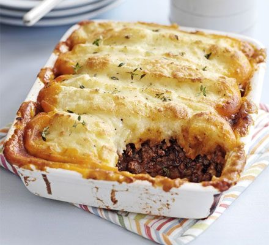

Cottage Pie

Cottage Pie, made with beef and vegetables
Ingredients
- 1 pound lean ground beef
- 1 onion, diced
- 3 carrots, diced
- 2 tablespoons all-purpose flour
- 1 tablespoon Italian seasoning
- ½ teaspoon ground cinnamon
- 2 tablespoons chopped fresh parsley
- 1 ½ cups beef broth
- 1 tablespoon tomato paste
- salt and pepper to taste
- 4 potatoes, peeled and diced
- 1 cup milk
- ¼ cup butter, softened
- ¼ pound shredded Cheddar cheese
Steps
- Heat a large skillet over medium-high heat.
- Combine beef broth and tomato paste together in a jug; add to beef mixture.
- Preheat the oven to 400 degrees F (200 degrees C).
- Meanwhile, place diced potatoes in a medium saucepan; cover with water and place over high heat.
- Spoon ground beef mixture into a 9x13-inch baking dish; spread mashed potatoes on top and sprinkle with grated Cheddar cheese.
- Bake in preheated oven until top is browned and cheese is bubbly, about 25 minutes.